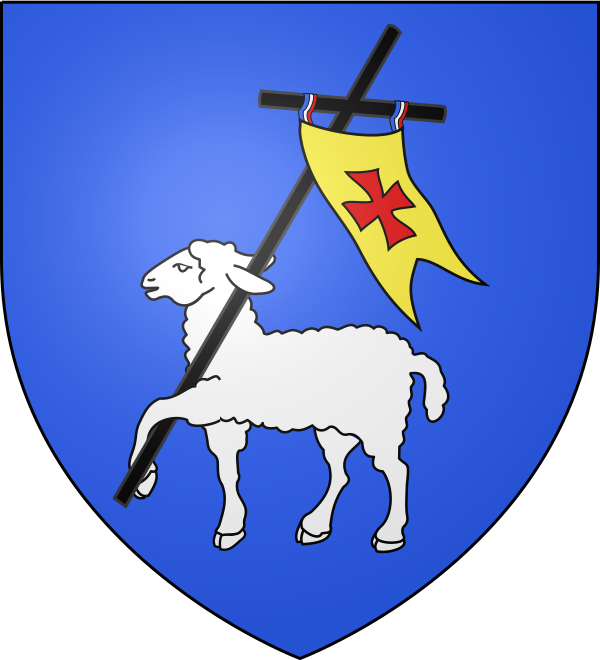
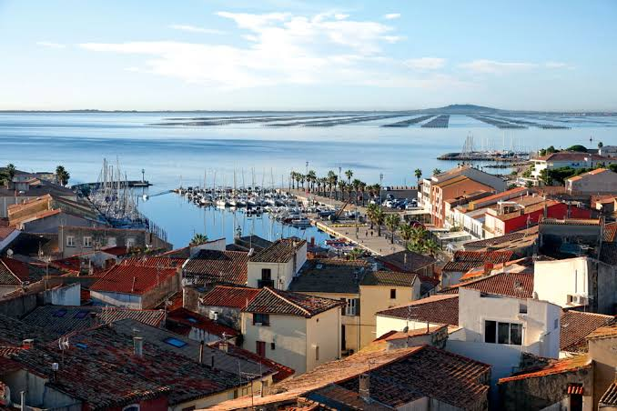
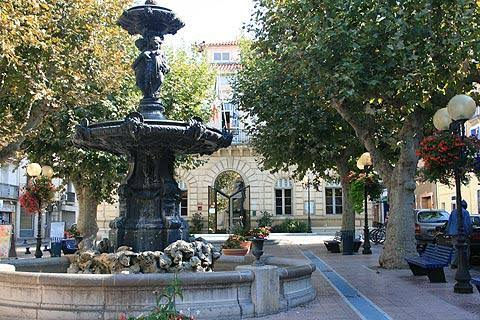

Mèze
Port de Thau


⟹ Port · Vignes · Traditions de Thau ⟸

Un des plus anciens foyers d’occupation du bassin de Thau. Le territoire de Mèze est occupé bien avant l’époque romaine. Dès les âges du Bronze et du Fer, les populations exploitent les ressources de la lagune et de ses rivages. La pêche, la collecte des coquillages et les échanges par voie d’eau donnent au site une fonction économique très ancienne.
VIIe siècle avant J.-C. : les contacts avec le monde grec. Des traces d’occupation grecque ont été mises au jour au bord de l’étang. L’arrivée des Phocéens dans la région, notamment à Agde, introduit ou accélère de nouvelles pratiques agricoles et commerciales. La vigne se développe, les échanges méditerranéens s’intensifient et une agglomération connue sous le nom de Mesua apparaît progressivement.
Une vocation portuaire précoce. Grâce à sa position au bord de la lagune, Mèze sert très tôt de lieu d’étape et d’échange. La richesse piscicole de Thau et l’accès aux routes maritimes favorisent le développement d’un habitat permanent. Les traditions historiques locales évoquent aussi l’exploitation précoce du sel, des ressources halieutiques et de la vigne.
De l’Antiquité au haut Moyen Âge. Après la période gallo-romaine et les bouleversements de l’Antiquité tardive, le site demeure occupé. Au IXe siècle, sous les Carolingiens, les terres de Mèze sont attribuées à des hispani, populations réfugiées venues de la péninsule Ibérique et installées dans le Languedoc après les conflits avec les pouvoirs musulmans.
Le castrum médiéval. À partir des IXe-XIe siècles, un habitat fortifié se structure. Le castrum devient le noyau du bourg médiéval. Autour de lui s’organisent maisons, lieux de culte, activités artisanales et espaces de commerce. Cette organisation explique en partie la trame du centre ancien encore perceptible aujourd’hui.

1209 : la croisade albigeoise. Comme une grande partie du Languedoc, Mèze est touchée par les bouleversements de la croisade contre les Albigeois. Simon de Montfort récupère le fief en 1209 et impose un nouveau blason, qui demeure à l’origine des armes actuelles de la commune.
1229 : rattachement au royaume de France. À l’issue des transformations politiques du premier tiers du XIIIe siècle, le castrum de Mèze est définitivement intégré au domaine du royaume. La ville conserve néanmoins une forte autonomie de fonctionnement local et poursuit son développement autour de l’étang et des terres agricoles.
Une économie longtemps partagée entre terre et eau. Durant l’époque moderne, viticulture, cultures céréalières, pêche et petits métiers portuaires se complètent. Les habitants exploitent simultanément les ressources agricoles de la plaine et celles de la lagune. Les traditions nautiques, notamment les joutes, prennent une place importante dans la vie collective.
XIXe siècle : une remarquable prospérité. La seconde moitié du XIXe siècle constitue un âge d’or pour Mèze. L’expansion de la viticulture, l’amélioration des voies de transport, l’arrivée du chemin de fer et l’activité du port placent la ville parmi les plus prospères du canton. Les vins et alcools sont expédiés vers de nombreux marchés.
Le temps des tonneliers et des négociants. La fabrication de futailles devient une activité importante, directement liée au commerce du vin. Tonneliers, négociants, ouvriers agricoles, marins et commerçants participent à une économie dynamique dont les traces restent visibles dans l’architecture de la ville et de son port.
Crises et reconversion après la Première Guerre mondiale. Les bouleversements du début du XXe siècle, les crises viticoles et les conséquences de la guerre imposent une diversification. Les habitants cherchent de nouvelles ressources dans l’étang. C’est dans ce contexte que se développent progressivement les premières formes modernes de conchyliculture.
Après 1945 : l’essor des coquillages. L’élevage des huîtres et des moules prend une ampleur considérable dans la seconde moitié du XXe siècle. Le port conchylicole du Mourre Blanc devient un équipement essentiel et Mèze s’impose comme l’un des principaux centres conchylicoles de Méditerranée. La lagune retrouve ainsi, sous une forme moderne, la fonction nourricière qu’elle exerce depuis des millénaires.

Le Bœuf de Mèze et les fêtes populaires. L’identité mézoise ne repose pas seulement sur l’économie. Le Bœuf de Mèze, animal totémique porté lors des fêtes, les joutes nautiques, les processions, les musiques et les rassemblements sur les quais constituent un patrimoine immatériel particulièrement vivant. Ces traditions transmettent l’histoire du village autant que ses monuments.
Une ville entre patrimoine et environnement. Aujourd’hui, Mèze associe viticulture, agriculture, pêche, conchyliculture, activités de service et tourisme. La protection de l’étang de Thau est devenue un enjeu majeur : la qualité de ses eaux conditionne directement l’avenir de la conchyliculture et de la biodiversité. L’histoire de Mèze reste donc indissociable de celle de cette petite mer intérieure.
Repères : âges du Bronze et du Fer, exploitation ancienne du bassin · VIIe siècle av. J.-C., présence grecque attestée · IXe siècle, implantation des Hispani et formation du castrum · XIe siècle, développement du village · 1209, Simon de Montfort · 1229, rattachement au royaume de France · XIXe siècle, prospérité viticole, portuaire et ferroviaire · XXe siècle, essor de la conchyliculture.
Chronologie synthétique de Mèze